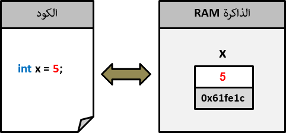
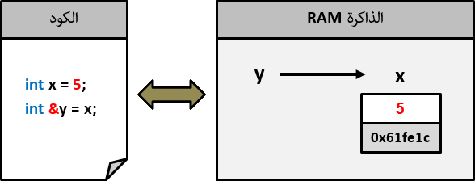

C++المراجع
مفهوم المراجع C++
المراجع ( References ) هي العناوين التي يتم إعطائها لأي شيء (مثل المتغيرات, المصفوفات و الكائنات) يتم تعريفه في الذاكرة عند تشغيل البرنامج.
عناوين الأشياء التي يتم تخصيص مساحة لها في الذاكرة, يتم وضعها بأسلوب Hexadecimal حيث تجد أغلب العنواين تحتوي على أرقام و أحرف كالتالي 0xd5ef87c.
الوصول للأشياء الموجودة في الذاكرة أمر مهم جداً حيث يجعلك قادر على تقليل المساحة التي يحتاجها برنامجك من الذاكرة.
كما أنه قد يجعل حجم الكود أصغر حيث أنك تستطيع الوصول للأشياء الموجودة فيها بشكل مباشر و هذا الأمر ستلاحظه إن كنت تعمل في مشاريع ضخمة.
إمكانية الوصول للأشياء الموجودة في الذاكرة هو أهم ما يميز لغة C++ عن باقي اللغات التي لا يمكن فيها ذلك كلغة جافا و لغة بايثون.
الآن, للوصول إلى عناوين الأشياء الموجودة في الذاكرة نستخدم العامل & الذي يقال له Address Operator.
طباعة عناوين الأشياء الموجودة في الذاكرة في C++
لطباعة عنوان المساحة المخصصة لأي متغير تم تعريفه في الذاكرة نضع & قبل إسمه كما سنرى في المثال التالي.
مثال
main.cpp
#include <iostream>
using namespace std;
int main()
{
// و قيمته 5 x هنا قمنا بتعريف متغير إسمه
int x = 5;
// في الذاكرة x هنا قمنا بطباعة عنوان المساحة التي تم تخصيصها للمتغير
cout << "Address of x in memory: " << &x;
return 0;
}
•سنحصل على نتيجة تشبه النتيجة التالية عند التشغيل.
Address of x in memory: 0x61fe1c
الصورة التالية تظهر كيف تم تخزين عنوان و قيمة المتغير x في الذاكرة.

ربط متغيرين على نفس العنوان الموجود في الذاكرة في C++
إذا قمت بتعريف متغير و تريد الوصول له بشكل مباشر بإسم مختلف, يمكنك تعريف متغير آخر و تجعله يشير لعنوانه في الذاكرة كما في المثال التالي.
المثال الأول
main.cpp
#include <iostream>
using namespace std;
int main()
{
// و قيمته x هنا قمنا بتعريف متغير إسمه
int x = 5;
// في الذاكرة x يشير بنفس عنوان المتغير y هنا قمنا بتعريف متغير إسمه
int &y = x;
// x هي نفسها قيمة المتغير y و لاحظ كيف أن قيمة المتغير .y و x هنا قمنا بطباعة قيمة المتغيرين
cout << "x = " << x << endl;
cout << "y = " << y;
return 0;
}
•سنحصل على النتيجة التالية عند التشغيل.
x = 5
y = 5
الصورة التالية تظهر كيف أن المتغير y يشير لنفس قيمة المتغير x في الذاكرة.

عندما تقوم بربط متغيرين على نفس القيمة الموجود في الذاكرة, تصبح قادر على تغييرها من أي واحد منهما.
في المثال التالي قمنا بتعريف المتغير x ثم قمنا بتعريف متغير إسمه y و إعطائه نفس قيمة x.
بعدها قمنا بتغيير القيمة المشتركة بين المتغيرين x و y عن طريق المتغير y.
في الأخير قمنا بعرض القيمة التي يحتويها x و القيمة التي يحتويها y للتأكد ما إن كانت تغيرت بالنسبة لكلاهما أم لا.
المثال الثاني
main.cpp
#include <iostream>
using namespace std;
int main()
{
// و قيمته x هنا قمنا بتعريف متغير إسمه
int x = 5;
// في الذاكرة x يشير بنفس عنوان المتغير y هنا قمنا بتعريف متغير إسمه
int &y = x;
// x و التي هي نفسها قيمة المتغير y هنا قمنا بتغيير قيمة المتغير
y = 7;
// للتأكد ما إن كانا يحتويان على نفس القيمة الجديدة و التي هي 7 y و x هنا قمنا بطباعة قيمة المتغيرين
cout << "x = " << x << endl;
cout << "y = " << y;
return 0;
}
•سنحصل على النتيجة التالية عند التشغيل.
x = 7
y = 7
ملاحظات و أمثلة عملية حول استخدام المراجع في C++
القواعد التالية مهمة جداً عند التعامل مع المراجع و يجب أن تحفظها حتى لا تقع في أخطاء بسببها:
عندما ننشئ مرجع لشيء فنحن كأننا نضيف إسم آخر ( Alias ) لهذا الشيء و لا يمكن إلغاؤه.
عند تعريف المرجع, يجب مباشرةً تحديد عنوان الشيء الذي يشير لقيمته في الذاكرة.
بعد تعريف المرجع, لا يمكن تغيير الشيء الذي يشير لقيمته.
هنا وضعنا لك عدة أمثلة حول الأخطاء التي قد تقع فيها عند التعامل مع المراجع حتى تتعلم كيف تتجنبها.
شاهد الأمثلة »
المثال التالي مهم جداً و هو يعلمك كيف تقوم بتمرير الشيء الموجود في الذاكرة بشكل مباشر لدالة.
شاهد المثال »

 محرر الويب
محرر الويب نظام الألوان
نظام الألوان محول الوحدات
محول الوحدات محلل عناوين الشبكات
محلل عناوين الشبكات